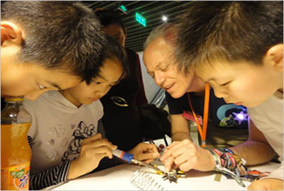

创客空间释义

这是社区化运营的工作空间，在这里，有共同兴趣的人们（通常是对电脑、机械、技术、科学、数字艺术活电子技术）可以聚会，社交，展开合作。
创客空间也称为hackerspaces或fab labs，在全球不断涌现。它是蓬勃发展的创客运动的一部分，鼓励人们创新。"创客"（maker）是指出于兴趣与爱好，努力把各种创意转变为现实的人。在互联网的背景下，创客又有了新的定义，他们可以利用开源硬件和互联网，把更多的创意转变为产品。

这种工作室为人们提供工具、材料、专业知识，供人们自己动手施展创意。
创客空间，尽可能地降低科创类社团的进入门槛，让各类来自不同社区、有Q点的人都能够体验创造的乐趣，可以发挥自己的潜能。